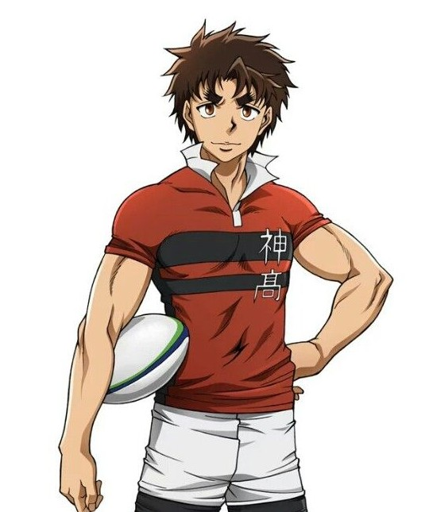

Gion Kenji est le personnage principal du manga All Out! Il est un joueur de rugby passionné et déterminé, qui rejoint l'équipe de son lycée pour poursuivre son rêve de devenir le meilleur joueur possible. Son parcours est marqué par des défis, des rivalités et des moments de camaraderie avec ses coéquipiers.
Kenji Gion joue au poste de troisième ligne aile, aussi appelé flanker (numéro 6 ou 7). C’est un poste situé dans la troisième ligne de la mêlée. Son rôle est notamment de plaquer les adversaires, de récupérer les ballons et de soutenir ses coéquipiers pendant les phases de jeu.